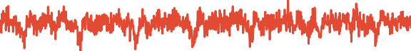
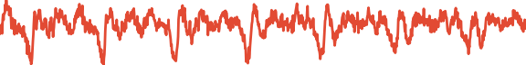

Authors: Nanxin Chen, Yu Zhang, Heiga Zen, Ron J. Weiss, Mohammad Norouzi, William Chan
Abstract: This paper introduces WaveGrad, a conditional model for waveform generation through estimating gradients of the data density. This model is built on the prior work on score matching and diffusion probabilistic models. It starts from Gaussian white noise and iteratively refines the signal via a gradient-based sampler conditioned on the mel-spectrogram. WaveGrad is non-autoregressive, and requires only a constant number of generation steps during inference. It can use as few as 6 iterations to generate high fidelity audio samples. WaveGrad is simple to train, and implicitly optimizes for the weighted variational lower-bound of the log-likelihood. Empirical experiments reveal WaveGrad to generate high fidelity audio samples matching a strong likelihood-based autoregressive baseline with less sequential operations.
Illustration of WaveGrad's waveform generation in only 6 refinement iterations:
Text: Here are the match lineups for the Colombia Haiti match.
| n=0 |
||||||
| n=1 |
||||||
| n=2 |
 | |||||
| n=3 |  | |||||
| n=4 | ||||||
| n=5 | ||||||
| n=6 |
Note: To obtain the best audio quality, listen with headphones. Consider reducing the volume for the first few iterations above as they are mostly white noise.
Illustration of WaveGrad's waveform generation in 50 refinement iterations:

Samples from WaveGrad conditioned on a continuous scalar indicative of the noise level:
Note: Only a single model is trained. Different rows correspond to different iterative refinement schedules for inference.
| Text | Weekends at twenty three fifty. | Here are the match lineups for the Colombia Haiti match. |
On Friday night in Bridgeport expect a temperature of minus four degrees Fahrenheit. |
| Reference | |||
| WaveGrad Base (Linear 1000) | |||
| WaveGrad Base (Linear 50): | |||
| WaveGrad Base (Fib 25): | |||
| WaveGrad Base (Manual 6): |
Samples from WaveGrad conditioned on a discrete iteration index:
Note: Each row corresponds to an individual model that is trained with a particular iterative refinement scheudle in mind.
| Text | Weekends at twenty three fifty. | Here are the match lineups for the Colombia Haiti match. |
On Friday night in Bridgeport expect a temperature of minus four degrees Fahrenheit. |
| Reference | |||
| WaveGrad Base (Linear 1000) | |||
| WaveGrad Base (Linear 50): | |||
| WaveGrad Base (Fib 25): |